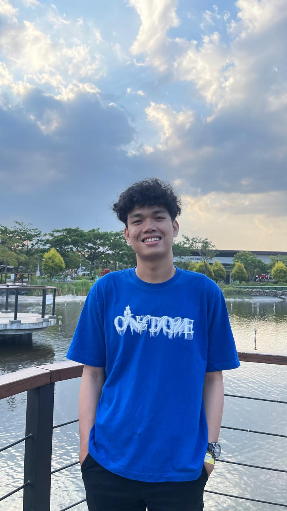

I'm a student
As a student at Telkom University, I have a strong
interest in data Analyst.
I believe my experience in
Developed interactive dashboards in Tableau to
visualize key performance indicators (KPIs),
enabling stakeholders to make data-driven
decisions has prepared me to tackle
challenges in the professional world.
Name:
Sean Bremanayuda
Age:
20 Years
Location:
Jl.Raya Cibeureum No.66
If you are interested, you can take a look at my CV.
Click here